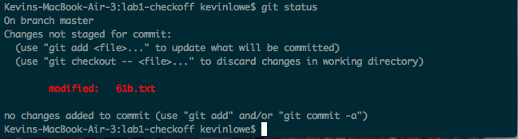
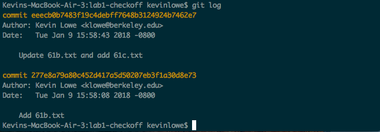

- Before You Begin
- A. Java Compilation & Development
- B. Git & Local Repos
- C. Git Exercise
- D. Git & Remote Repos
- E. Git Checkoff
- F. Leap Year
- G. Submitting Lab 1
- Recap
Before You Begin
- If you haven’t signed up to receive a GitHub repository, follow the instructions here.
- The vast majority of students use their own computer instead of the lab computers. If you want to use your own computer, complete lab1setup before beginning this lab.
- Since most students work on their own computers, your instructional account is not likely to be useful to you other than checking your grades. To see how to use your instructional account, see the instructional accounts guide.
- Be aware that there are a large number of setup steps this first week. Don’t be discouraged, and make sure to ask for help if you’re stuck! If you’re an on-campus student, the best place to ask for help is in the actual lab. If you’re not, Piazza is your best bet.
- Project 0 will allow pair-partnerships subject to these rules. Lab might be a good place to meet a partner – but make sure you both have the same Java background and are willing to work together in the same room (see partnership rules for details)!
-
For those of you who have been working ahead, do not use IntelliJ (from lab 2) today. For today's lab, please work from the command line to compile and run your code.
- Warning: This lab runs a little long, and it’s normal if you do not finish during your lab period, especially if you end up having a tricky setup issue that requires a lot of assistance.
- It’s OK to talk to other students while you work on this lab (or any other), but you should ultimately do all the typing/programming/entering-of-commands yourself. There’s a lot of important setup information in this lab that you need to have done independently of anyone else.
Find A Partner
Introduce yourself to someone you don’t know who has the same OS to collaborate with you as you complete the setup steps for today’s lab. Try to find someone who has similar programming experience - you’re encouraged to partner up for project 0!
A. Java Compilation & Development
Java 9 is currently installed on the instructional machines. You may need to install it on your personal computer. You can find instructions to do this above.
Introduction to Java
Complete exercises 1.1.1 and 1.1.2 from the H61B textbook. Also consider reading Chapter 1.1 as a review of what you’ve already seen in lecture (either on video or in person). Note that the videos embedded in the textbook are just the lecture videos, so there’s no need to watch them again.
For this lab, you should use the command line, not an IDE like IntelliJ or Eclipse (see lab 2). Don’t worry about submitting your work yet, we’ll cover how to do that later in this lab.
B. Git & Local Repos
In 61B, you’ll be required to use the git version control tool, which is wildly popular out in the real world. Unfortunately, the abstractions behind it are fairly tricky to understand, so it is likely that you will encounter significant frustration at some point as you learn to use git.
Before you proceed, read sections A-C of Sarah Kim’s Using Git Guide
You do not need to read section D or later.
C. Git Exercise
Now that you’ve read the first 3 sections of the Using Git Guide, you’re now ready to start using git! As part of your lab checkoff, you will be working through a small git workflow by setting up a git repository and making a couple commits to the repository. An academic intern or TA will look at the git repository during checkoff to ensure that it is in a good state. Please do the following actions. If you’re stuck on a step at any point, don’t hesitate to ask a TA or an academic intern for help!
If you need help with creating directories, creating files, changing directories, etc., see section B of lab1setup.
- Create a directory called lab1-checkoff. You can put this directory anywhere on your computer.
- Move into the lab1-checkoff directory, and initialize a git repository in this directory.
- Create a file called
61b.txtin any way you’d like. In this .txt file, add the text “61b version 1” into it. - Create another file called
61c.txtin any way you’d like. In this .txt file, add the text “61c version 1” into it. - Begin tracking only
61b.txt, and create a new commit containing just this file, with the following commit message: “Add 61b.txt”. - Make a modification in
61b.txtby changing the text in the file to: “61b changed to version 2”. - Make another commit, this time containing both
61b.txtand61c.txt. The commit message should be: “Update 61b.txt and add 61c.txt”. - Finally, make one more modification to
61b.txtby changing the text in the file to: “61b changed to version 3”. Don’t commit this version.
Again, if there are any questions for any of these steps, please ask in lab or on Piazza.
At this point, if you were to type in git status, something close to this
should show:

Also, if you were to run git log, something close to this should show:

Be sure to save this repository and directory until you get checked-off by an academic intern or TA. See section E for more information on getting credit for the lab checkoff. Along with other short conceptual questions involving git, you will be asked to revert 61b.txt back to the version in the most recent commit, as well as back to the earliest version of the file, so make sure you know how to do this! Hint: Look into the checkout command.
Note: Be careful when using the checkout command, as your repo might end up in an unexpected state. Specifically, if you see something about your repository being in a detached HEAD state as a result of a checkout command, that is something we don’t want. Read here for more on what it is and how to fix it.
D. Git & Remote Repos
We’re now ready to finish off the lab. But first…
STOP! Before you proceed, read section D of the Using Git Guide
Here is the link to the guide. There is no need to read sections E or later. Those are for your later reference, and do not need to be read during this lab.
In 61B, you’ll be required to submit your code to your personal GitHub repository. This is for several reasons:
- To spare you the incredible agony of losing your files.
- To submit your work for grading and to get results back from the autograder.
- To save you from the tremendous anguish of making unknown changes to your files that break everything.
- To ensure that we have easy access to your code so that we can help if you’re stuck.
- To dissuade you from posting your solutions on the web in a public GitHub repository. This is a major violation of course policy!
- To expose you to a realistic workflow that is common on every major project you’ll ever work on again.
- To enable safer, more equitable partner collaborations.
Before beginning this section ensure that the name of your GitHub repository in the Berkeley-CS61B-Student organization matches your instructional account login. If this is not true, please let your TA know.
Note: You’ll need to perform this series of steps to set up your Git repo on each computer you use (e.g. instructional computer, personal computer). If you know that you’ll only be using your personal computer, feel free to do this only on your personal computer (and not your lab account).
-
Clone your Berkeley-CS61B-Student organization repository.
- Navigate to the spot in your folders on your computer that you’d like to
start your repository. In the example below, I’m assuming you want all your stuff in a folder named cs61b, but you can pick a different name if you’d like.
$ cd cs61b - Enter the following command to clone your GitHub repo. Make sure to
replace the
**with your own instructional account login/repo name.git clone https://github.com/Berkeley-CS61B-Student/sp18-**.gitIf you’d like to SSH instead of HTTPS (and set up your own SSH key), feel free to also do that instead. If you don’t know what any of this means, just use the command above. The advantage of SSH is that you won’t have to type in your GitHub password every time you use your repository.
- Move into your newly created repo! (Make sure you do this part, or the
rest of the steps below will not work correctly.)
$ cd sp18-**
- Navigate to the spot in your folders on your computer that you’d like to
start your repository. In the example below, I’m assuming you want all your stuff in a folder named cs61b, but you can pick a different name if you’d like.
-
Add the
skeletonremote repository. You will pull from this remote repository to get starter code for assignments. (Make sure that you are within the newly created repository folder when the continue with these commands.)- Enter the following command to add the
skeletonremote.git remote add skeleton https://github.com/Berkeley-CS61B/skeleton-sp18.git - Listing the remotes should now show both the
originandskeletonremotes.$ git remote -v - If you get an error that says “Not a git repository”, make sure you’re in the
sp18-**directory.
- Enter the following command to add the
Working on the Skeleton
- You must now pull from the
skeletonremote in order to get the starter code for lab 1. You will also do this when new projects and assignments are released. To do this, use the spookiest command in the whole git toolbox:$ git pull skeleton masterWhat this does is grab all remote files from the repo named
skeleton(which is located athttps://github.com/Berkeley-CS61B/skeleton-sp18.git) and copies them into your current folder.If you get an error similar to “fatal: refusing to merge unrelated histories”, you probably ran GitHub’s suggested commands when you created your repository. To fix this, you can instead run:
$ git pull --rebase --allow-unrelated-histories skeleton masterthis time only.
-
If you list the files in your current directory, you’ll see that there are now two folders:
lab1andlibrary-sp18. Look in thelibrary-sp18folder, and you’ll see that it is currently empty and will receive some sweet stuff in the lab2 setup. Don’t delete it. Look in thelab1folder and you’ll see files calledLeapYear.javaandmagic_word.txtthat you’ll work with in later parts of this lab. -
Move the
HelloWorld.javaandHelloNumbers.javathat you previously created into thelab1directory. If you didn’t createHelloNumbers.java, go back and do Exercise 1.1.2 (see part A of this lab). - Stage and commit
HelloWorld.javaandHelloNumbers.java.$ git add lab1/* $ git commit -m "completed first part of lab1" - Push these changes to the
masterbranch on theoriginremote repo.$ git push origin masterYou can verify that this has been successful by checking your repo on github.com. For example, if your repo were
sp18-alf, you’d go to https://github.com/Berkeley-CS61B-Student/sp18-alf.
E. Git Checkoff
Once you’ve verified that your code was pushed to github, put your name down on the lab whiteboard to get your git exercise (from part C) checked off. The TA or lab assistant, upon completion of the lab checkoff, will tell you what to put into the magic word file in order to pass the autograder. If there’s a wait, feel free to move on to part F until your name is called.
F. Leap Year
In the lab1 folder, you should see a file called LeapYear.java. This program is supposed to test whether or not a given year is a Leap Year. The user will
give a year as a command line parameter (examples given below), and then print out whether or not that year is a leap year, e.g.
$ java LeapYear 2000
2000 is a leap year.
$ java LeapYear 1999
1999 is not a leap year.
$ java LeapYear 2004
2004 is a leap year.
$ java LeapYear 2100
2100 is not a leap year.
A leap year is either:
- divisible by 400 or
- divisible by 4 and not by 100.
For example, 2000 and 2004 are leap years. 1900, 2003, and 2100 are not leap years.
Your code must declare a method as follows: public static boolean
isLeapYear(int year). This method will be tested by the Gradescope autograder. Make sure to provide a description of the method as a comment. Your description should be contained by /** and */. Comments contained by /** and */ are also called “Javadoc comments” or just “Javadocs”. These comments can span multiple lines if need the extra space, e.g. the checkLeapYear Javadocs.
Javdocs may contain optional tags, e.g. @param. We do not require you to use any tags like this in 61B except the @source tag. Use the @source tag any time you receive significant help on a project. The @source tag is not required for HW or lab, though we recommend it anyway, since it’s a good scholarly and professional habit to cite your sources.
Some Java tips:
- The
%operator implements remainder. Thus, the value ofyear % 4will be0,1,2, or3. - The
!=operator compares two values for inequality. The code fragmentif (year % 4 != 0)reads as “if the remainder when dividing year by 4 is not equal to 0.” - When one of the arguments of the
+operator is a String, the arguments are concatenated as Strings. For example,"horse"+"babies"would return"horsebabies"
G. Submitting Lab 1
The last step is to submit your work with Gradescope. Gradescope is the site that you’ll use to submit homework, lab, and project assignments. To sign up for Gradescope, head to gradescope.com and click on the “Sign up for free” link at the top right. Use the entry code posted in this Piazza thread. If you’re already registered somehow (e.g. a TA added you), there’s no need to enter the code again.
To submit your code, do NOT use the Drag and Drop feature. Instead, click the little GitHub button in the bottom right (shown below).

After clicking this button, you’ll be taken to a screen where you select your repository and branch (shown below). If your login is “sp18-ape”, you’ll select “sp18-ape” in the top box, and in the bottom box you’ll pick “master”. Later, you can create your own “branches” (as described in the advanced part of the Git Guide) if you want those graded instead, though that won’t be required in 61B.

Please report any issues you may have to Piazza. Entire error messages and/or screenshots are welcome.
Important: ** We HIGHLY encourage you to make frequent commits! **Lack of proper version control will not be considered an excuse for lost work, particularly after the first few weeks.
Recap
-
Java is a compiled language. You can use
javacandjavato compile and run your code. -
Java is an object-oriented language. Every Java file must contain either a class, interface, or enum.
-
When running a Java program, the
mainmethod runs. Thismainmethod can call other methods/classes in the program. -
Git is a version control system that tracks the history of a set of files in the form of commits.
-
Commit often and use informative commit messages.
-
Pull from the
skeletonremote repository to get or update starter code for assignments. -
Use Gradescope to submit homework, labs, and projects.